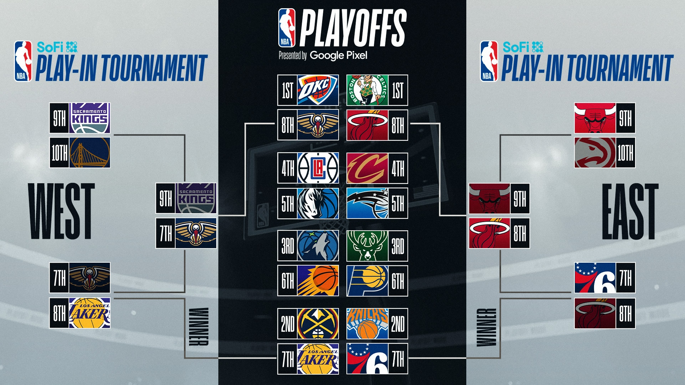

Il campionato NBA è suddiviso in due Conference in base al territorio: troviamo la Western Conference, che raccoglie le squadre della zona Ovest del paese, e la Eastern Conference, che raccoglie le franchigie della zona Est degli Stati Uniti. Inoltre, ogni Conference è suddivisa a sua volta in tre Division, ognuna delle quali contiene 5 squadre

Il Calendario NBA è diviso in 3 fasi: Regular Season, Playoffs e Finals.
Durante la Regular Season, ciascuna delle 30 squadre disputa 82 partite complessive:
- 4 partite contro le altre 4 squadre della stessa divison (16 partite totali);
- 3 o 4 partite contro le altre 10 squadre della stessa conference (36 partite totali);
- 2 partite contro le squadre dell’altra conference (30 partite totali)
Al termine della Regular Season si entra nella seconda parte della stagione, i Playoff e le Finals NBA. In questa fase le prime 8 squadre di ciascuna conference (risultato del Play-in compreso) vengono disposte in un tabellone in base al loro posizionamento in classifica durante la Regular Season e si giocano il Titolo NBA.
